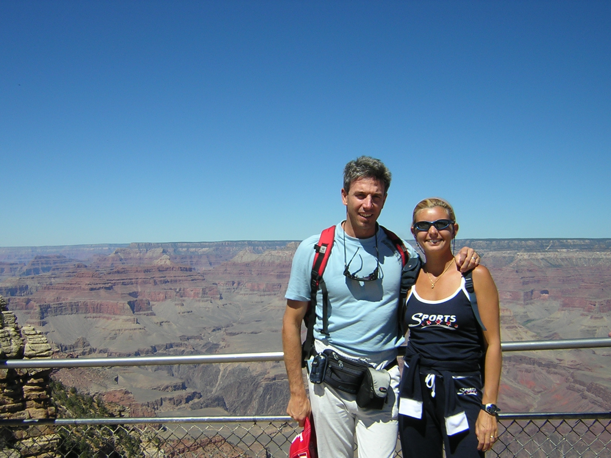

Inspiration for Trip
The main inspiration for this trip and the locations that were chosen is that this is very similar to an itinerary that my parents followed before I was born. There are many stories I have heard of this trip and therefore want to be able to do something similar. This website is also to be able to help plan something similar for myself in the future as it is a trip I would like to be able to take in the future. Because of these reasons it will include more details and various links and connections to other sites which will allow for the most information possible to be able to plan such a trip.
